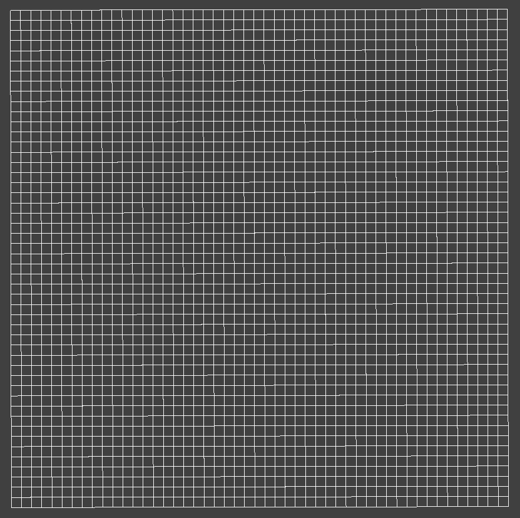
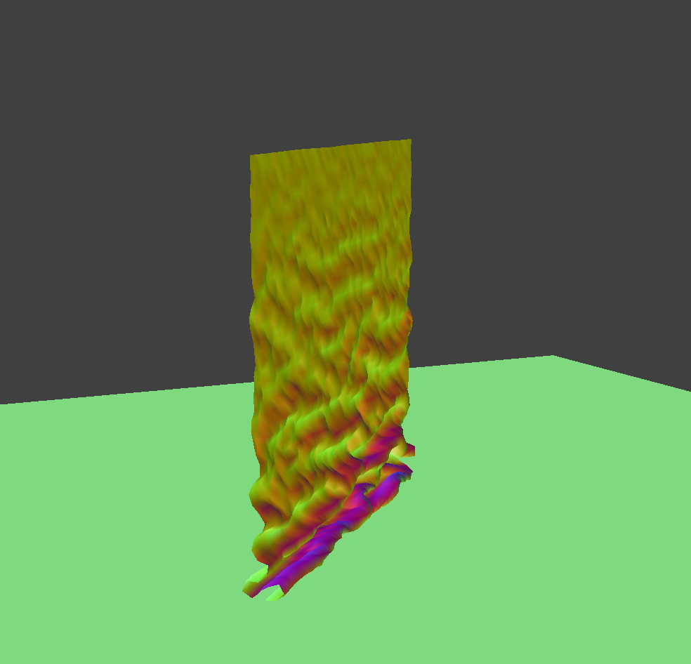

CS 184: Computer Graphics and Imaging, Spring 2019
Project 3-2: Pathtracer 2
Z Wang
This content can be found on my Github Page: zchickenwang.github.io.
Overview
Part I: Masses and Springs
Physics
We're going to represent our cloth using a wireframe of particles which are interconnected via springs. These
particles are masses which have position and are affected by forces; we'll construct them by filling the cloth's dimensions
with evenly-spaced masses according to a predefined resolution. Then we'll add spring relationships between pairs of masses.
These relationships belong to three types: (1) structural constraints between immediately adjacent masses, (2) shearing constraints
between immediately diagonal masses, and (3) bending constraints between masses which are 2 masses away from each other. Together,
these three constraint types form a simplified model of real cloth physics.
Results
Here's a scene with rectangular cloth wireframe. The spring constraints are visualized as lines connecting pairs of particles.
The first two images show our wireframe from a distant and closer perspective.
To understand the differences between constraint types, we can turn off all constraints except shearing relationships, which are
shown in the third image.
Image four, then, reveals all forces other than shearing: namely, structural and bending constraints (which overlap with one another).
Finally, we can juxtapose images c and d to get another look at the original, full view wireframe in image e.
|
1a. Wireframe with all constraints.
|
1b. Wireframe with all constraints.
|
|
1c. Shearing constraints only.
|

1d. Non-shearing constraints only.
|
|
1e. Both shearing and non-shearing.
|
Part II: Simulation via Numerical Integration
Now that we have a model of masses and springs, we need to implement time-passing by using Newton's laws to model how
the cloth wireframe changes over time due to forces.
Algorithm
There are two types of forces we'll consider: external forces like gravity, and spring correction forces from the
various spring constraints.
We'll first accumulate all the acceleration incumbent on each particle, from both external and spring forces. Each spring
follows F = ks*dd, where ks is a spring constant and dd is the distance that the spring is stretched (in other words,
the delta between the spring's rest length and it's current length).
We then use Verlet integration (for it's simplicity) to translate force into changes in position. Specifically, given a
time delta dt, our particle position moves according to the equation x_(t+dt) = x_(t) + v*dt + a*dt^2, where v and a
are velocity and acceleration, respectively. We'll get acceleration from the forces calculated previously, and approximate
velocity by interpolating between a particle's previous two positions. Lastly, we'll add a rough damping constant to
approximate real-life dissipation of energy via friction and heat.
One final optimization, borrowed from the SIGGRAPH 1995 Provot paper, constrains spring constraints even further by asserting
a global limit on how much a spring can be stretched (here we'll use 10%). If the particles on two ends of a spring get
pulled beyond this distance, we'll bring the particles back within 10% of the rest length. Note that pinned particles' positions
are unaffected throughout this process.
Results
Here are some results of our simulation. We can vary the input constants like ks, cloth density, and damping to get
interesting changes. The default parameters are ks = 5000 N/m, density = 15 g/cm^2, damping = 0.2%.
As we make ks larger, we increase the spring's internal forces and thus make it more difficult to bend or pull the spring.
Since our external forces stay constant, this means the cloth will be pulled more tautly together and exhibit less folding.
This is exactly what we see, and we elaborate on ks later on as well.
Changing density has a similar effect--as the cloth becomes more dense, there are more springs with fewer distance between
them. This means small changes in the spring are going to be displayed, and more folding occurs at more granular levels. We also
explore density later on.
As we adjust damping, we let more or less force dissipate rather than be expressed in spring constraints. Thus, very low damping
means all the forces are used to interact with springs, and we see lots of minute folding in the cloth. With high damping, these
minute changes are largely mitigated, and we only see larger, more general folding in the cloth.
Finally, the last image shows a cloth (using default parameters) which has all four corners pinned. After we let the simulation
roughly converge, this is how the cloth's normal map looks.
|
4c. default.
|
4d. ks = 50,000 (high).
|
 4c. density = 5 (low).
4c. density = 5 (low).
|
4d. density = 50 (high).
|
|
4e. damping = 0%.
|
4f. damping = 100%.
|
 4g. 4-pinned cloth, default parameters.
4g. 4-pinned cloth, default parameters.
|
Part III: Collisions with Other Objects
Rendering cloth on it's own is rather limited; we'd like for it to interact realistically with other types of objects
in the model.
Spheres and Planes
We'll implement interaction between the cloth and two primitives: spheres and planes.
The basic premise behind collisions is that we don't want the cloth to pass through certain surfaces. So collision
handing involves (1) detecting collisions and (2) updating particle positions.
With spheres, we can check to see if the distance between a particle and the sphere's center is within radius length. If
so, then we need to push the particle back out, so we can find the vector from the center to the particle,
and move the particle along that direction until it is distance radius + some offset away from the center.
With planes, we can determine collisions by comparing the dot product of the plane normal with vectors pointing to
the current and previous position of each particle. If these positions lie on different sides of the plane, then their
dot products will have different signs. We also make sure to take care of the case when a point happens to be orthogonal
w.r.t. the normal, i.e. on the plane itself.
If a collision is found, we'll find the point's orthogonal projection onto the plane, and use that as a marker for
the corrected position. I say marker because we'll apply factors related to friction and useful offsets, which update
the position to be in the vicinity of our marker.
Once these handlers have been implemented, we incorporate them into the simulation by checking every particle against
every collision object in each step (this can be optimized using some spatial data structure). We'll do this after integration, but
before the Provot correction.
Results
The first three images depict a cloth resting atop a sphere. We vary the spring constant ks between 500 and 50,000 N/m,
and the cloth adjusts as a result. Like before, we can see how ks makes spring constraints stronger and weaker--with a low ks of 500,
gravity is stronger relative to the spring forces, and the cloth gets dragged down more and becomes more tensile (exhibiting more folding).
As ks goes up, we see the spring forces getting stronger, and pulling the cloth more taut, more close together as external forces
diminish in relative strength.
Images d and e shows a cloth which starts in the air above a plane and which falls down to rest on that plane. Thanks to our offset
and careful collision detection scheme, there are little to no artifacts of the cloth peeking through to the other side of the plane.
The last image is the same cloth and plane scene, but with a texture applied.
|
3a. ks = 500.
|
3b. ks = 5,000.
|
|
3c. ks = 50,000.
|
|
3d. Cloth in air above plane.
|
3e. Cloth resting on plane.
|
|
3f. Textured cloth resting on plane.
|
Part IV: Self-Collisions
But even after handling external collisions, our cloth simulator has a serious flaw--when cloth falls on top
of itself, the whole wireframe collapses and folds onto itself. Instead, we'd like the cloth to collide with
itself realistically, and to visually have some nonzero thickness.
Algorithm
While we could do brute-force checking between particles and collision objects (since our scenes have few collision
objects), doing the same quadratic-time comparing of particles with themselves is too inefficient.
Instead we'll split the space up into buckets of a certain size (such that each bucket ends up with around 5-20 particles),
and build a hash function which easily maps particle positions to buckets. Then every iteration, we'll first construct this map,
and then iterate through all the points, querying the map to find a set of their close neighbors (points in the same bucket).
This way, we only check neighbors around a certain radius (roughly speaking), and thus cut down our time to something closer
to linear (b*n where b = avg bucket size and n = number of particles).
In each check, we make sure particles in the same cloth mesh are at least 2*tk apart, where tk is the thickness of the cloth.
If we're checking a point against its neighbors and the distance between it and a neighbor is less than 2*tk, then we must
adjust the current point's position and move it in the opposite direction of that neighbor, such that their distance is
at least 2*tk. But since a point may collide with several neighbors, we'll wait till after accumulating correction
vectors from all neighbors before applying their average as an update to the point's position.
We'll make sure to not check for a particle's self-collision with itself. This case can be caught using one of the particle's
unique identifiers, like start position, or current position.
We'll also handle self-collisions before external collisions.
Results
The first set of four images depict a cloth falling on top of itself at different times. Note how the cloth exhibits self-collision
handling: it doesn't collapse into itself, and clipping artifacts are rare. Due to our rough damping estimator, the cloth will
continue to seek equilibrium until it is completely flat on the plane--this true, final state is not captured but one can imagine
the cloth slowly converging to such a state.
These were computed with a ks of 5,000 and density of 15. ks has units N/m and density g/cm^2!
The next set of images show what happens when we adjust ks and density. Like before, making ks smaller in turn weakens spring forces,
so we can see the cloth becoming more tensile and "thin". Making ks larger tightens up the cloth and reduces the amount of folding, since
folding requires springs to be bent. Likewise, adjusting density means changing the granularity at which the cloth interacts with itself.
More density results in more fine-grained changes and folds, since now the springs that need to be bent are smaller.
|
4a. Time stop 0.
|

4b. Time stop 1.
|
|
4c. Time stop 2.
|
4d. Time stop 3.
|
 4e. low ks of 500.
4e. low ks of 500.
|
 4f. high ks of 50,000.
4f. high ks of 50,000.
|
|
4g. low density of 5.
|
4h. high density of 50.
|
Part V: Shaders
Once we have our model and simulation worked out, it's time to apply a shader. Shader programs take in what we've constructed so far,
a series of particles (as vertices) and properties about the scene, and outputs pixel values to the screen buffer as a result.
We'll use OpenGL to build our shaders, as their platform is more efficient than ours. OpenGl shaders execute in two phases:
vertex shaders and fragment shaders.
Vertex shaders take in the model's vertices and details about each vertex like color and normal (these are called attributes)
, as well as details about the scene like lighting and texture (these are called uniforms). The vertex shader is responsible
for updating these attributes of vertices, as well as outputting them as input to the fragment shaders (these outputs are called
varyings). The fragment shader takes the per-vertex values of the vertex shader and interpolates them into per-pixel values. For example,
it can use barycentric coordinates to interpolate between a pixel's polygon vertices, computing parameters like color and normal. These can
then be used to output a final color value.
Blinn-Phong
One shader we implement is Blinn-Phong shading, which approximates realistic lighting using three core components: ambient, diffuse, and
specular lighting. Ambient lighting is a uniform light across the whole scene, and seeks to capture the effects of light typically
bouncing often enough to create a sense of ambient lighting. Diffuse lighting represents the diffuse part of surface texture, which reflects
light based on the angle between the light source and surface normal. Specular lighting, on the other hand, reflects
rays from a light source in a mirror-like symmetrical direction. In this way, it computes light based on the angle between [the half-angle of
view and light source direction] and [the surface normal]. When these two directions are close, there's a higher specular contribution.
Results
In these images, we see a scene of a cloth and sphere under Blinn-Phong shading. We'll show each component separately, then
the final composed image.
|
5. Blinn-Phong shading.
|
5. Ambient light only.
|
|
5. Diffuse light only.
|
5. Specular light only.
|
Texture Mapping
By passing along uv-coordinates as Barycentric coordinates to the shader, we can map textures onto the cloth. This process
is exactly the same as what we did in project 1; see below for an example of a sphere mapped with an album cover.
Bump and Displacement Mapping
We can create algorithmic textures on the cloth as well. In bump mapping, we change the output color by using a custom
normal calculator in the fragment shader. To model bumps, we can estimate the rate of change of the normal at a position
using its color values as a heuristic (color values here coming from a texture).
As the normal changes, the resulting Blinn-Phong output changes as well, and we get
this bump pattern on the cloth.
However, just creating a pattern means the color is affected, but not the shape of the cloth itself. To make our bumps
more realistic, we can adjust the particle positions along with their surface normals. This is called displacement
mapping, and it can conveniently be done in the vertex shader!
We use the same heuristic as before, used to estimate changes in surface normal. This heuristic is now also used to physically
bump particle positions up along the direction of its original surface normal. These new positions are then fed to the fragment shader,
which applies the same bump shading as before.
Results
The first two images show examples of bump and displacement mapping. We then change the sphere mesh's coarseness for
each of the two shaders, and compare the results.
As the sphere's coarseness varies, so too does the coarseness of our bumps. In the finely coarsed 128 by 128 mesh,
the normal variations that form our bumps are very fine-grained: this is most visible in the displacement mapped sphere.
This effect makes sense, since we're adjusting the cloth particles based on the resolution of the surface of the sphere.
While these photos are not super clear, the difference in bump mapping is also visible between coarseness values, mostly
in how much detail is given to the bumps (i.e. how closely the bumps match the texture).
We use height constant of 10 and normal constant of 0.2. Any differences in the shape is due to timing of screen capture.
|
5. Default bump mapping.
|
5. Default displacement mapping.
|
|
5. 16x16 bump mapping.
|
5. 16x16 displacement mapping.
|
|
5. 128x128 bump mapping.
|
 5. 128x128 displacement mapping.
5. 128x128 displacement mapping.
|
Mirror
Another cool shader is making surfaces behave like mirrors. For this, we'll need some sort of environment map which gives
color values for the environment in every direction (approximating scene objects at infinite distance).
The calculations can be done fairly easily--we find the viewing angle between a point and the camera. We then reflect
this angle across the surface normal, and query the environment map for that direction. This will tell us what the
mirror should reflect at that point. See below for examples.